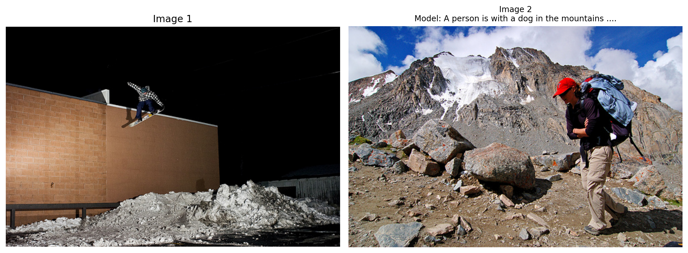
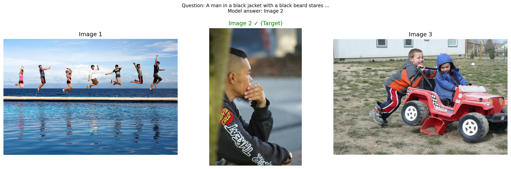

# Method 1: Delete models and clear cache
# This releases GPU memory allocated to model weights and intermediate tensors
# Delete the model components
del vlm
del vision_encoder
del language_model
del projector
# Clear PyTorch's GPU cache
import gc
gc.collect() # Run Python garbage collector first
torch.cuda.empty_cache() # Then clear CUDA cache
print("GPU memory cleared!")
print(f"GPU memory allocated: {torch.cuda.memory_allocated() / 1024**3:.2f} GB")
print(f"GPU memory reserved: {torch.cuda.memory_reserved() / 1024**3:.2f} GB")Additional Memory Management Tips
When to clear memory: - After training/evaluation before starting a new notebook - When switching between large models - If you get CUDA out of memory errors
What gets cleared: - del model - Removes Python reference to model - gc.collect() - Frees Python objects from memory - torch.cuda.empty_cache() - Releases cached GPU memory back to system
Checking memory usage:
# See current GPU memory usage
!nvidia-smi
# Or in Python:
print(f"Allocated: {torch.cuda.memory_allocated() / 1024**3:.2f} GB")
print(f"Reserved: {torch.cuda.memory_reserved() / 1024**3:.2f} GB")
print(f"Max allocated: {torch.cuda.max_memory_allocated() / 1024**3:.2f} GB")Note: After clearing memory, you’ll need to reload the models if you want to use them again.
Introduction
In our VLM series, we’ve built models that handle: 1. Image captioning 2. Object detection 3. Visual question answering 4. Multi-task learning
But all of these handled only one image at a time. What if we want to: - Compare temporal images: “What changed between these two satellite images?” - Analyze sequences: “What happens across these time-series images?” - Multi-image reasoning: “Which image shows the forest fire?”
This is what temporal/multi-image VLMs do - inspired by models like TEOChat for earth observation, GPT-4V, and Gemini.
Multi-Image Architecture
Following TEOChat’s approach (Figure 2/3), we’ll use temporally-shared vision encoding with image identifiers:
[IMG1 tokens] <image_1> [IMG2 tokens] <image_2> [Text: "What changed?"]
↓ ↓ ↓
Shared Vision Shared Vision Language
Encoder Encoder ModelKey Design Principles (from TEOChat): 1. Shared weights across time - Same vision encoder processes all images 2. Image identifiers - Special tokens to reference specific images 3. Temporal reasoning - Model learns to compare and reason across sequences
Examples
| Task | Input | Output |
|---|---|---|
| Comparison | [IMG1] <image_1> [IMG2] <image_2>: What changed? |
"The forest is now cleared" |
| Selection | Which shows a cat? [IMG1] [IMG2] [IMG3] |
"Image 2" |
| Temporal | What happens? [IMG1] [IMG2] [IMG3] |
"Vegetation decreases over time" |
Setup
!uv pip install -q transformers datasets torch torchvision pillow accelerate einops timmimport torch
import torch.nn as nn
import torch.nn.functional as F
from torch.utils.data import DataLoader, Dataset
from transformers import (
AutoModelForCausalLM,
AutoTokenizer,
ViTModel,
ViTImageProcessor,
)
from datasets import load_dataset
from PIL import Image
import numpy as np
import matplotlib.pyplot as plt
from tqdm.auto import tqdm
import random
import os
import warnings
warnings.filterwarnings('ignore')
%config InlineBackend.figure_format = 'retina'
device = torch.device("cuda" if torch.cuda.is_available() else "cpu")
print(f"Using device: {device}")/home/nipun.batra/.uv/nb-base/lib/python3.12/site-packages/tqdm/auto.py:21: TqdmWarning: IProgress not found. Please update jupyter and ipywidgets. See https://ipywidgets.readthedocs.io/en/stable/user_install.html
from .autonotebook import tqdm as notebook_tqdmUsing device: cudaPart 1: Multi-Image VLM Architecture
Key changes from single-image VLM: 1. Accept multiple images in forward pass 2. Interleave image tokens with text tokens 3. Image position markers (e.g., <image_1>, <image_2>)
# Same projector as before
class VisionProjector(nn.Module):
"""Projects vision features into the language model's embedding space."""
def __init__(self, vision_dim: int, language_dim: int):
super().__init__()
self.projection = nn.Sequential(
nn.Linear(vision_dim, language_dim),
nn.GELU(),
nn.LayerNorm(language_dim),
nn.Linear(language_dim, language_dim),
)
def forward(self, vision_features: torch.Tensor) -> torch.Tensor:
return self.projection(vision_features)# Multi-Image VLM with interleaved encoding
class MultiImageVLM(nn.Module):
"""VLM that handles multiple images with interleaved image-text encoding."""
# Special tokens for image positions
IMAGE_TOKEN_TEMPLATE = "<image_{}>"
def __init__(
self,
vision_encoder: ViTModel,
language_model: AutoModelForCausalLM,
projector: VisionProjector,
tokenizer: AutoTokenizer,
):
super().__init__()
self.vision_encoder = vision_encoder
self.language_model = language_model
self.projector = projector
self.tokenizer = tokenizer
for param in self.vision_encoder.parameters():
param.requires_grad = False
def encode_image(self, pixel_values: torch.Tensor) -> torch.Tensor:
"""Encode a single image."""
with torch.no_grad():
vision_outputs = self.vision_encoder(pixel_values=pixel_values)
image_features = vision_outputs.last_hidden_state
projected = self.projector(image_features)
return projected
def encode_images(self, pixel_values_list: list) -> list:
"""Encode multiple images.
Args:
pixel_values_list: List of (batch, 3, 224, 224) tensors
Returns:
List of (batch, num_patches, hidden_dim) tensors
"""
return [self.encode_image(pv) for pv in pixel_values_list]
def forward(
self,
pixel_values_list: list, # List of image tensors
input_ids: torch.Tensor,
attention_mask: torch.Tensor,
image_positions: list = None, # Where to insert each image in the sequence
labels: torch.Tensor = None,
):
"""
Forward pass with multiple images.
Args:
pixel_values_list: List of [batch, 3, 224, 224] tensors (one per image)
input_ids: Text tokens [batch, seq_len]
attention_mask: Attention mask [batch, seq_len]
image_positions: List of positions where images should be inserted
If None, all images are prepended
labels: Target labels [batch, seq_len]
"""
batch_size = input_ids.shape[0]
# Encode all images
image_embeds_list = self.encode_images(pixel_values_list)
# Get text embeddings
text_embeds = self.language_model.get_input_embeddings()(input_ids)
# Simple strategy: prepend all images before text
# [IMG1 tokens] [IMG2 tokens] ... [text tokens]
combined_embeds = torch.cat(image_embeds_list + [text_embeds], dim=1)
# Create attention mask for images
total_image_tokens = sum(img_emb.shape[1] for img_emb in image_embeds_list)
image_attention = torch.ones(
(batch_size, total_image_tokens),
dtype=attention_mask.dtype,
device=attention_mask.device
)
combined_attention = torch.cat([image_attention, attention_mask], dim=1)
# Create labels
if labels is not None:
image_labels = torch.full(
(batch_size, total_image_tokens),
fill_value=-100,
dtype=labels.dtype,
device=labels.device
)
combined_labels = torch.cat([image_labels, labels], dim=1)
else:
combined_labels = None
# Forward through language model
outputs = self.language_model(
inputs_embeds=combined_embeds,
attention_mask=combined_attention,
labels=combined_labels,
return_dict=True,
)
return outputs
@torch.no_grad()
def generate(
self,
pixel_values_list: list, # List of image tensors
prompt: str,
max_new_tokens: int = 50,
temperature: float = 0.7,
do_sample: bool = True,
) -> str:
"""Generate text given multiple images and a prompt."""
self.eval()
# Encode all images
image_embeds_list = self.encode_images(pixel_values_list)
# Concatenate all image embeddings
all_image_embeds = torch.cat(image_embeds_list, dim=1) # [1, total_patches, hidden]
# Encode prompt
prompt_ids = self.tokenizer.encode(prompt, return_tensors="pt").to(pixel_values_list[0].device)
generated_ids = prompt_ids.clone()
# Generate token by token
for _ in range(max_new_tokens):
current_embeds = self.language_model.get_input_embeddings()(generated_ids)
full_embeds = torch.cat([all_image_embeds, current_embeds], dim=1)
outputs = self.language_model(inputs_embeds=full_embeds)
next_token_logits = outputs.logits[:, -1, :]
if do_sample:
probs = F.softmax(next_token_logits / temperature, dim=-1)
next_token = torch.multinomial(probs, num_samples=1)
else:
next_token = next_token_logits.argmax(dim=-1, keepdim=True)
generated_ids = torch.cat([generated_ids, next_token], dim=1)
if next_token.item() == self.tokenizer.eos_token_id:
break
return self.tokenizer.decode(generated_ids[0], skip_special_tokens=True)# Load base model
vision_model_name = "google/vit-base-patch16-224"
lm_model_name = "HuggingFaceTB/SmolLM-135M"
pretrained_dir = "mini-vlm-flickr8k"
# Load components
vision_encoder = ViTModel.from_pretrained(vision_model_name)
language_model = AutoModelForCausalLM.from_pretrained(lm_model_name)
tokenizer = AutoTokenizer.from_pretrained(lm_model_name)
image_processor = ViTImageProcessor.from_pretrained(vision_model_name)
if tokenizer.pad_token is None:
tokenizer.pad_token = tokenizer.eos_token
# Create projector
vision_dim = vision_encoder.config.hidden_size
language_dim = language_model.config.hidden_size
projector = VisionProjector(vision_dim, language_dim)
# Load pretrained weights
if os.path.exists(f"{pretrained_dir}/mini_vlm_full.pt"):
print(f"Loading pretrained model from {pretrained_dir}/")
checkpoint = torch.load(f"{pretrained_dir}/mini_vlm_full.pt", map_location='cpu')
projector.load_state_dict(checkpoint['projector_state_dict'])
language_model.load_state_dict(checkpoint['language_model_state_dict'])
print("Loaded pretrained weights!")
else:
print("No pretrained weights found.")
# Create multi-image VLM
vlm = MultiImageVLM(vision_encoder, language_model, projector, tokenizer)
vlm = vlm.to(device)
print(f"\nMulti-Image VLM loaded on {device}")
print(f"Trainable parameters: {sum(p.numel() for p in vlm.parameters() if p.requires_grad):,}")Some weights of ViTModel were not initialized from the model checkpoint at google/vit-base-patch16-224 and are newly initialized: ['pooler.dense.bias', 'pooler.dense.weight']
You should probably TRAIN this model on a down-stream task to be able to use it for predictions and inference.Loading pretrained model from mini-vlm-flickr8k/
Loaded pretrained weights!
Multi-Image VLM loaded on cuda
Trainable parameters: 135,291,456Part 2: Create Multi-Image Datasets
We’ll create synthetic multi-image tasks: 1. Image Comparison - “What’s different between image 1 and image 2?” 2. Image Selection - “Which image shows a dog?” 3. Sequential Understanding - “Describe what happens across these images.”
# Load Flickr8k for creating multi-image tasks
flickr_dataset = load_dataset("jxie/flickr8k", split="train").shuffle(seed=42)
print(f"Flickr8k dataset: {len(flickr_dataset)} samples")
print(f"We'll create multi-image tasks from this dataset")Flickr8k dataset: 6000 samples
We'll create multi-image tasks from this dataset# Image Comparison Dataset
# Task: Given two images, describe the second one relative to the first
class ImageComparisonDataset(Dataset):
"""Compare two images and describe differences."""
COMPARISON_PROMPTS = [
"Image 1: [IMG1] Image 2: [IMG2] What's in image 2?",
"Compare these images: [IMG1] [IMG2]. Describe the second image.",
"First image: [IMG1] Second image: [IMG2] Describe the second one.",
]
def __init__(self, hf_dataset, image_processor, tokenizer, num_pairs=500, max_length=128):
self.dataset = hf_dataset
self.image_processor = image_processor
self.tokenizer = tokenizer
self.num_pairs = num_pairs
self.max_length = max_length
# Create random pairs
self.pairs = []
for i in range(num_pairs):
idx1 = random.randint(0, len(hf_dataset) - 1)
idx2 = random.randint(0, len(hf_dataset) - 1)
while idx2 == idx1:
idx2 = random.randint(0, len(hf_dataset) - 1)
self.pairs.append((idx1, idx2))
def __len__(self):
return len(self.pairs)
def __getitem__(self, idx):
idx1, idx2 = self.pairs[idx]
# Get images
img1 = self.dataset[idx1]['image'].convert('RGB')
img2 = self.dataset[idx2]['image'].convert('RGB')
# Process images
pv1 = self.image_processor(img1, return_tensors="pt").pixel_values.squeeze(0)
pv2 = self.image_processor(img2, return_tensors="pt").pixel_values.squeeze(0)
# Get caption for second image (what we want to generate)
caption2 = self.dataset[idx2][f'caption_{random.randint(0, 4)}']
# Create prompt
prompt = random.choice(self.COMPARISON_PROMPTS)
full_text = f"{prompt} {caption2}{self.tokenizer.eos_token}"
# Tokenize
encoding = self.tokenizer(
full_text,
max_length=self.max_length,
padding='max_length',
truncation=True,
return_tensors='pt'
)
input_ids = encoding['input_ids'].squeeze(0)
attention_mask = encoding['attention_mask'].squeeze(0)
# Mask prompt
prompt_tokens = self.tokenizer.encode(prompt, add_special_tokens=False)
prompt_len = len(prompt_tokens)
labels = input_ids.clone()
labels[:prompt_len] = -100
labels[attention_mask == 0] = -100
return {
'pixel_values_list': [pv1, pv2], # List of 2 images
'input_ids': input_ids,
'attention_mask': attention_mask,
'labels': labels,
}# Image Selection Dataset
# Task: Given N images, identify which one matches a description
class ImageSelectionDataset(Dataset):
"""Select which image matches a description."""
def __init__(self, hf_dataset, image_processor, tokenizer, num_samples=500, num_images=3, max_length=128):
self.dataset = hf_dataset
self.image_processor = image_processor
self.tokenizer = tokenizer
self.num_samples = num_samples
self.num_images = num_images
self.max_length = max_length
# Create random image sets
self.image_sets = []
for i in range(num_samples):
indices = random.sample(range(len(hf_dataset)), num_images)
target_idx = random.randint(0, num_images - 1) # Which one to describe
self.image_sets.append((indices, target_idx))
def __len__(self):
return len(self.image_sets)
def __getitem__(self, idx):
indices, target_idx = self.image_sets[idx]
# Get images
images = [self.dataset[i]['image'].convert('RGB') for i in indices]
pixel_values_list = [
self.image_processor(img, return_tensors="pt").pixel_values.squeeze(0)
for img in images
]
# Get description of target image
target_caption = self.dataset[indices[target_idx]][f'caption_{random.randint(0, 4)}']
# Create prompt: "Which image shows {description}? Image 1: [IMG1] Image 2: [IMG2] ..."
# Answer: "Image {target_idx + 1}"
prompt = f"Which image shows: {target_caption}?"
answer = f"Image {target_idx + 1}"
full_text = f"{prompt} {answer}{self.tokenizer.eos_token}"
# Tokenize
encoding = self.tokenizer(
full_text,
max_length=self.max_length,
padding='max_length',
truncation=True,
return_tensors='pt'
)
input_ids = encoding['input_ids'].squeeze(0)
attention_mask = encoding['attention_mask'].squeeze(0)
# Mask prompt
prompt_tokens = self.tokenizer.encode(prompt, add_special_tokens=False)
prompt_len = len(prompt_tokens)
labels = input_ids.clone()
labels[:prompt_len] = -100
labels[attention_mask == 0] = -100
return {
'pixel_values_list': pixel_values_list, # List of N images
'input_ids': input_ids,
'attention_mask': attention_mask,
'labels': labels,
}# Create datasets
comparison_dataset = ImageComparisonDataset(flickr_dataset, image_processor, tokenizer, num_pairs=800)
selection_dataset = ImageSelectionDataset(flickr_dataset, image_processor, tokenizer, num_samples=400, num_images=3)
print(f"Image comparison pairs: {len(comparison_dataset)}")
print(f"Image selection samples: {len(selection_dataset)}")
print(f"Total multi-image samples: {len(comparison_dataset) + len(selection_dataset)}")Image comparison pairs: 800
Image selection samples: 400
Total multi-image samples: 1200# Custom collate function to handle variable number of images
def multi_image_collate_fn(batch):
"""Collate function for multi-image batches.
Handles variable number of images per sample.
"""
# Find max number of images in this batch
max_images = max(len(item['pixel_values_list']) for item in batch)
# Pad samples with fewer images (use zeros)
batch_pixel_values_list = [[] for _ in range(max_images)]
for item in batch:
num_images = len(item['pixel_values_list'])
for i in range(max_images):
if i < num_images:
batch_pixel_values_list[i].append(item['pixel_values_list'][i])
else:
# Pad with zeros
batch_pixel_values_list[i].append(torch.zeros_like(item['pixel_values_list'][0]))
# Stack each image position
batch_pixel_values_list = [torch.stack(imgs) for imgs in batch_pixel_values_list]
# Stack other fields normally
input_ids = torch.stack([item['input_ids'] for item in batch])
attention_mask = torch.stack([item['attention_mask'] for item in batch])
labels = torch.stack([item['labels'] for item in batch])
return {
'pixel_values_list': batch_pixel_values_list,
'input_ids': input_ids,
'attention_mask': attention_mask,
'labels': labels,
}# Create dataloaders
from torch.utils.data import ConcatDataset
multi_image_dataset = ConcatDataset([comparison_dataset, selection_dataset])
train_loader = DataLoader(
multi_image_dataset,
batch_size=4,
shuffle=True,
collate_fn=multi_image_collate_fn,
num_workers=0,
)
print(f"Total training samples: {len(multi_image_dataset)}")
print(f"Number of batches: {len(train_loader)}")Total training samples: 1200
Number of batches: 300# Test the dataloader
batch = next(iter(train_loader))
print(f"Batch pixel_values_list length: {len(batch['pixel_values_list'])}")
print(f"First image batch shape: {batch['pixel_values_list'][0].shape}")
print(f"Input IDs shape: {batch['input_ids'].shape}")
# Decode sample
print(f"\nSample text:")
print(tokenizer.decode(batch['input_ids'][0], skip_special_tokens=True)[:150])Batch pixel_values_list length: 3
First image batch shape: torch.Size([4, 3, 224, 224])
Input IDs shape: torch.Size([4, 128])
Sample text:
First image: [IMG1] Second image: [IMG2] Describe the second one. Man paddling canoe on green water , with dog in boat .Part 3: Multi-Image Training
def train_multi_image_vlm(model, train_loader, num_epochs=6, lr=1e-4):
"""Train the multi-image VLM."""
trainable_params = [p for p in model.parameters() if p.requires_grad]
optimizer = torch.optim.AdamW(trainable_params, lr=lr)
model.train()
model.vision_encoder.eval()
losses = []
for epoch in range(num_epochs):
epoch_loss = 0
progress_bar = tqdm(train_loader, desc=f"Epoch {epoch+1}/{num_epochs}")
for batch in progress_bar:
# Move to device
pixel_values_list = [pv.to(device) for pv in batch['pixel_values_list']]
input_ids = batch['input_ids'].to(device)
attention_mask = batch['attention_mask'].to(device)
labels = batch['labels'].to(device)
outputs = model(
pixel_values_list=pixel_values_list,
input_ids=input_ids,
attention_mask=attention_mask,
labels=labels,
)
loss = outputs.loss
optimizer.zero_grad()
loss.backward()
torch.nn.utils.clip_grad_norm_(trainable_params, max_norm=1.0)
optimizer.step()
epoch_loss += loss.item()
progress_bar.set_postfix({'loss': f"{loss.item():.4f}"})
avg_loss = epoch_loss / len(train_loader)
losses.append(avg_loss)
print(f"Epoch {epoch+1} - Average Loss: {avg_loss:.4f}")
return losses# Train the multi-image model
losses = train_multi_image_vlm(vlm, train_loader, num_epochs=6, lr=1e-4)Epoch 1/6: 100%|██████████| 300/300 [04:05<00:00, 1.22it/s, loss=2.6830]Epoch 1 - Average Loss: 2.1395Epoch 2/6: 100%|██████████| 300/300 [03:50<00:00, 1.30it/s, loss=2.5269]Epoch 2 - Average Loss: 1.8581Epoch 3/6: 100%|██████████| 300/300 [03:53<00:00, 1.28it/s, loss=1.6834]Epoch 3 - Average Loss: 1.7235Epoch 4/6: 1%|▏ | 4/300 [00:03<04:35, 1.07it/s, loss=0.9858]--------------------------------------------------------------------------- KeyboardInterrupt Traceback (most recent call last) Cell In[13], line 2 1 # Train the multi-image model ----> 2 losses = train_multi_image_vlm(vlm, train_loader, num_epochs=6, lr=1e-4) Cell In[12], line 33, in train_multi_image_vlm(model, train_loader, num_epochs, lr) 30 loss = outputs.loss 32 optimizer.zero_grad() ---> 33 loss.backward() 34 torch.nn.utils.clip_grad_norm_(trainable_params, max_norm=1.0) 35 optimizer.step() File ~/.uv/nb-base/lib/python3.12/site-packages/torch/_tensor.py:625, in Tensor.backward(self, gradient, retain_graph, create_graph, inputs) 615 if has_torch_function_unary(self): 616 return handle_torch_function( 617 Tensor.backward, 618 (self,), (...) 623 inputs=inputs, 624 ) --> 625 torch.autograd.backward( 626 self, gradient, retain_graph, create_graph, inputs=inputs 627 ) File ~/.uv/nb-base/lib/python3.12/site-packages/torch/autograd/__init__.py:354, in backward(tensors, grad_tensors, retain_graph, create_graph, grad_variables, inputs) 349 retain_graph = create_graph 351 # The reason we repeat the same comment below is that 352 # some Python versions print out the first line of a multi-line function 353 # calls in the traceback and some print out the last line --> 354 _engine_run_backward( 355 tensors, 356 grad_tensors_, 357 retain_graph, 358 create_graph, 359 inputs_tuple, 360 allow_unreachable=True, 361 accumulate_grad=True, 362 ) File ~/.uv/nb-base/lib/python3.12/site-packages/torch/autograd/graph.py:841, in _engine_run_backward(t_outputs, *args, **kwargs) 839 unregister_hooks = _register_logging_hooks_on_whole_graph(t_outputs) 840 try: --> 841 return Variable._execution_engine.run_backward( # Calls into the C++ engine to run the backward pass 842 t_outputs, *args, **kwargs 843 ) # Calls into the C++ engine to run the backward pass 844 finally: 845 if attach_logging_hooks: KeyboardInterrupt:
# Plot training loss
plt.figure(figsize=(8, 4))
plt.plot(range(1, len(losses)+1), losses, marker='o', linewidth=2)
plt.xlabel('Epoch')
plt.ylabel('Loss')
plt.title('Multi-Image VLM Training Loss')
plt.grid(True, alpha=0.3)
plt.show()Part 4: Test Multi-Image Capabilities
# Test 1: Image Comparison
print("=" * 70)
print("TEST 1: IMAGE COMPARISON")
print("=" * 70)
# Get two random images
idx1, idx2 = 2000, 2005 # Outside training range
img1 = flickr_dataset[idx1]['image']
img2 = flickr_dataset[idx2]['image']
caption2 = flickr_dataset[idx2]['caption_0']
# Process images
pv1 = image_processor(img1, return_tensors="pt").pixel_values.to(device)
pv2 = image_processor(img2, return_tensors="pt").pixel_values.to(device)
# Generate
prompt = "Image 1: [IMG1] Image 2: [IMG2] What's in image 2?"
response = vlm.generate([pv1, pv2], prompt, max_new_tokens=40, temperature=0.7)
# Extract answer
if "image 2?" in response:
answer = response.split("image 2?")[-1].strip()
else:
answer = response
print(f"\nPrompt: {prompt}")
print(f"Generated: {answer}")
print(f"GT Caption: {caption2}")
# Show images
fig, (ax1, ax2) = plt.subplots(1, 2, figsize=(12, 6))
ax1.imshow(img1)
ax1.set_title("Image 1", fontsize=12)
ax1.axis('off')
ax2.imshow(img2)
ax2.set_title(f"Image 2\nModel: {answer[:50]}...", fontsize=10)
ax2.axis('off')
plt.tight_layout()
plt.show()======================================================================
TEST 1: IMAGE COMPARISON
======================================================================
Prompt: Image 1: [IMG1] Image 2: [IMG2] What's in image 2?
Generated: A person is with a dog in the mountains .
GT Caption: A backpacker is walking in front of a mountain with arms crossed .
# Test 2: Image Selection
print("\n" + "=" * 70)
print("TEST 2: IMAGE SELECTION")
print("=" * 70)
# Get 3 images
indices = [2010, 2015, 2020]
images = [flickr_dataset[i]['image'] for i in indices]
captions = [flickr_dataset[i]['caption_0'] for i in indices]
# Choose one to describe
target_idx = 1
target_caption = captions[target_idx]
# Process images
pixel_values_list = [
image_processor(img, return_tensors="pt").pixel_values.to(device)
for img in images
]
# Generate
prompt = f"Which image shows: {target_caption}?"
response = vlm.generate(pixel_values_list, prompt, max_new_tokens=10, do_sample=False)
if "shows:" in response:
answer = response.split("shows:")[-1].split("?")[-1].strip()
else:
answer = response
print(f"\nPrompt: {prompt}")
print(f"Generated: {answer}")
print(f"Correct answer: Image {target_idx + 1}")
# Show images
fig, axes = plt.subplots(1, 3, figsize=(15, 5))
for i, (img, ax) in enumerate(zip(images, axes)):
ax.imshow(img)
title = f"Image {i + 1}"
if i == target_idx:
title += " ✓ (Target)"
ax.set_title(title, fontsize=12, color='green' if i == target_idx else 'black')
ax.axis('off')
plt.suptitle(f"Question: {target_caption[:50]}...\nModel answer: {answer}", fontsize=10)
plt.tight_layout()
plt.show()
======================================================================
TEST 2: IMAGE SELECTION
======================================================================
Prompt: Which image shows: A man in a black jacket with a black beard stares pensively .?
Generated: Image 2
Correct answer: Image 2
Part 5: Save Multi-Image Model
# Save the model
save_dir = "mini-vlm-multiimage"
os.makedirs(save_dir, exist_ok=True)
torch.save({
'projector_state_dict': vlm.projector.state_dict(),
'language_model_state_dict': vlm.language_model.state_dict(),
'config': {
'vision_model_name': vision_model_name,
'lm_model_name': lm_model_name,
'vision_dim': vision_dim,
'language_dim': language_dim,
},
}, f"{save_dir}/mini_vlm_multiimage.pt")
tokenizer.save_pretrained(f"{save_dir}/tokenizer")
image_processor.save_pretrained(f"{save_dir}/image_processor")
print(f"Multi-image model saved to {save_dir}/")
print(f"Contents: {os.listdir(save_dir)}")Multi-image model saved to mini-vlm-multiimage/
Contents: ['tokenizer', 'mini_vlm_multiimage.pt', 'image_processor']Summary
We successfully built a temporal/multi-image VLM inspired by TEOChat for earth observation:
What We Built
- Multi-Image Architecture - handles variable number of images
- Temporally-Shared Encoding - same vision encoder processes all images (following TEOChat)
- Two Multi-Image Tasks:
- Image comparison (2 images)
- Image selection (3 images)
Key Insights from TEOChat
- Shared weights across time - More efficient than separate encoders
- Simple concatenation works - Prepend all images before text as baseline
- Temporal reasoning emerges - Model learns to compare images implicitly
- Synthetic data - Created multi-image tasks from single-image dataset
Architecture Evolution
Single Image: [IMG tokens] [text tokens]
↓
Multi-Image (Ours): [IMG1 tokens] [IMG2 tokens] [IMG3 tokens] [text tokens]
↓ ↓ ↓
Multi-Image (TEOChat): [IMG1 tokens] <image_1> [IMG2 tokens] <image_2> [text]Comparison to TEOChat
| Feature | TEOChat | Our Model |
|---|---|---|
| Temporally-shared encoder | ✓ | ✓ |
| Multi-image | ✓ | ✓ |
| Image identifiers | ✓ (<image_1>) |
✗ (future work) |
| Interleaved tokens | ✓ | Partial |
| Scale | LLaMA 2 (7B) | SmolLM (135M) |
| Domain | Earth observation | General images |
Limitations
- No image identifiers - Can’t reference specific images by position
- Simple concatenation - Not truly interleaved (images before text)
- Small model - Limited reasoning ability
- Synthetic tasks - Not real temporal or earth observation data
Next Steps (Towards TEOChat-style Architecture)
- Add image tokens - Implement
<image_1>,<image_2>identifiers - True interleaving - Insert images at arbitrary positions in text
- Temporal datasets - Use real change detection or time-series data
- Video understanding - Treat video frames as temporal sequences
- Cross-image attention - Let model attend between images explicitly
References
- TEOChat: A Large Vision-Language Assistant for Temporal Earth Observation Data - Figure 2/3 shows temporally-shared encoder architecture
- Building a Minimal VLM from Scratch
- Multi-Task VLM
- Flamingo: Visual Language Models for Few-Shot Learning
- NLVR2: Natural Language for Visual Reasoning
- Spot-the-Diff: Image Difference Captioning
GPU Memory Management
After running this notebook, you may want to free GPU memory before starting another notebook or task.